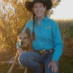
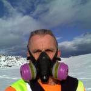
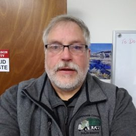

Mission:
Strive to be the leading statewide voice of recycling and an ongoing resource to advise, support and educate Montanans on waste reduction opportunities.
Who We Are:
Recycle Montana is a statewide non-profit, member based organization which serves as a resource for local governments, businesses and individuals seeking education, technical expertise and networking opportunities to increase recycling in their communities. The organization consists of a resourceful group of dedicated people and organizations that collectively work together to improve and grow recycling in Montana. Recycle Montana provides value to existing and new members interested in enhancing their recycling or looking for ways to reduce their waste in Montana. Our long-term vision is to create a Montana where individuals, business, rural or metro have an opportunity to recycle.
What We Do:
Promote recycling and waste reduction ideas through special events, social media and general communications. Building a group of dedicated people who are committed to supporting and sharing information about recycling. Provide access to best management practices for increasing recycling in your business or community. Encourage the use and purchase of recycled products, along with supporting the development of markets for recycled products.
Provide support for communities to start/improve their recycling capacity. Support an overall vision to have viable recycling opportunities available across the State of Montana. Maintain a national presence through memberships in other organizations that want to enhance recycling. Inform and educate people and businesses about the various recycling options and motivate to insure they are successful in their recycling program.
We are a central point for recycling networking and resource sharing. The more we learn and share information about recycling programs and issues in Montana, the stronger the network will be. Inform the public, law-making bodies, the business community and those involved with recycling about the environmental and economic importance of waste reduction and recycling. Provide educational resources through our website that will help you be a better, more informed recycler. Recycle Montana can connect you to mentors to assist with your recycling needs.
How We Do It:
Recycle Montana members donate their, time, money and/or resources to help maintain recycling programs and improve statewide resources. They also make a difference by expressing their views and concerns about recycling issues to local and statewide policy makers.
How You Can Help:
For change to occur, people must be aware, educated and motivated to recycle. We need your help in shaping the future of Recycling in the State of Montana. Without you, our mission would not be successful. We are committed to improving recycling in Montana. JOIN Today to help support recycling across the State of Montana.

Kirk Treece – Executive Director
Kirk has been active on the Board since 2014. His interest in recycling stems from a strong desire to do the right thing for the environment along with helping others in Montana who share in this goal. Professionally, he has over 25 years’ experience in managing and operating businesses. Most recently he has started his own business in the Missoula area. His professional career has been focused on taking care of the customer and he will work diligently to support the needs of the Recycle Montana community. Kirk has a Bachelors in Accounting from Northern Arizona University and his CPA Certificate with the State of Arizona.
As a professional, he considers it his responsibility to be active in his community and has served on several other boards. Kirk’s free time is spent with his family and dogs enjoying the outdoors, hiking, fishing and camping.
____________________________________________________________________________________________________________________________________________________________________________________________________________________________________
Candi Zion – President
Candi graduated from Arizona State University (ASU) with a Bachelors degree in History and a Masters degree in Public History/Historic Preservation, as well as an Honors degree from ASU Barrett Honor’s College. Her employment experience includes working as the Architectural Historian for the Navajo Nation, as a manager and part owner of a veterinary hospital, and as Rocky Mountain Front Coordinator for the Montana Wilderness Association. She continues to work as a cultural resource management consultant and ranches with her husband at Winifred. Candi has served as barrel racing director for various rodeo associations, qualified in barrel racing for several rodeo finals, and helped create Dine’ Mother Earth Team and Recycle Hi-Line. She loves the wide open spaces, mountains, geology, history, recycling, her horses and dog Wiggles.
____________________________________________________________________________________________________________________________________________________________________________________________________________________________________
Mark Nelson – Vice President
Mark is a third generation Montanan. He and his wife Robin live in the beautiful Mission Valley. Since May 2000, Mark has been the Program Manager for the Lake County Solid Waste District. Mark has a Bachelors of Science in Business Finance and a Masters of Public Administration from the University of Montana. Mark has been SWANA certified as a Manager of Landfill Operations and of Transfer Station Systems. Mark is also a licensed water system operator. Prior to his employment in the solid waste and recycling industry, Mark spent twenty years in the insurance industry, with the first ten in sales and agency operations and the last ten as an administrator in the Montana Insurance Commissioner’s Office. Mark is the immediate Past President of Recycle Montana and represents Lake County on the DEQ Solid Waste Advisory Council.
____________________________________________________________________________________________________________________________________________________________________________________________________________________________________
Elaine Taylor – Board Member
Elaine is the president of the Montana Beverage Association. Elaine has served on the board of the Montana Recycling Association since 2002 and has been on the board of Recycle Montana since its inception. A Montana native growing up in the Deer Lodge Valley, Elaine enjoys traveling with her family, bird hunting, golf, horses and lake time.
_____________________________________________________________________________________________________________________
Jennifer Bernosky – Treasurer
Jennifer Bernosky is the Account Manager with Republic Services in Missoula, MT. She was an integral part in the development of a more robust & affordable All-in-One (single-stream) curbside recycling program made available to Missoula residents in May 2016. Her focus is to continue increasing city-wide recycling participation, educating the community and collaborating with local recycling & sustainability-driven organizations. Jennifer has called Montana home for 20 years and lives in the beautiful Bitterroot Valley with her husband, 3 teenaged sons, 3 dogs, 1 cat, 2 ferrets and 10 chickens.
_____________________________________________________________________________________________________________________
Dianna Robinson – Secretary
Dianna Robinson in an Environmental Science Specialist at the Montana Department of Environmental Quality in the Materials Management Section. She holds a Bachelor’s degree in History and Secondary Education from Michigan State University and a Master’s degree in Environmental Sustainability from the University of Edinburgh, Scotland. She served two terms in the AmeriCorps as a crew leader with the Montana Conservation Corps in Helena, and as a regulatory trainee at the West Virginia Department of Environmental Protection. Dianna has also worked in Boston, MA at the non-profit the Green Restaurant Association, and as the district manager for the Antrim Conservation District in Bellaire, MI, as well as a pro-bono sustainability consultant for several small businesses.
_____________________________________________________________________________________________________________________
Rebecca Treece – Board Member
Rebecca Treece was born and raised on a farm in Vermont and holds a Bachelors degree in Education from the University of Vermont. She has spent her professional life as an educator, mother and lifelong learner. She has most recently started training as a Vision Therapist at an Optometry office in Missoula. Her passion for environmental responsibility through education led her to the join the board in 2017 to promote recycling in the beautiful state of Montana. She enjoys gardening, hiking, cooking and spending time with family in the great outdoors.
_____________________________________________________________________________________________________________________
Brian Hohn – Board Member
Brian is a Montana native, born and raised in Broadwater County. He and his wife, Claudette live in Townsend, where they raised their family and currently own and operate a small business there. Brian holds a Bachelor of Science degree in Petroleum Engineering from Montana Tech. After spending seven years as the Solid Waste Supervisor for Broadwater County, he recently took over the Jefferson County Solid Waste Operations. He is Solid Waste Association of North America (SWANA) Certified as a Manager of Landfill Operations. Brian’s interest in recycling came from helping his Grandfather pick up aluminum cans along the highway as a youth. His Grandparents lived through the Great Depression and saw value in everything.